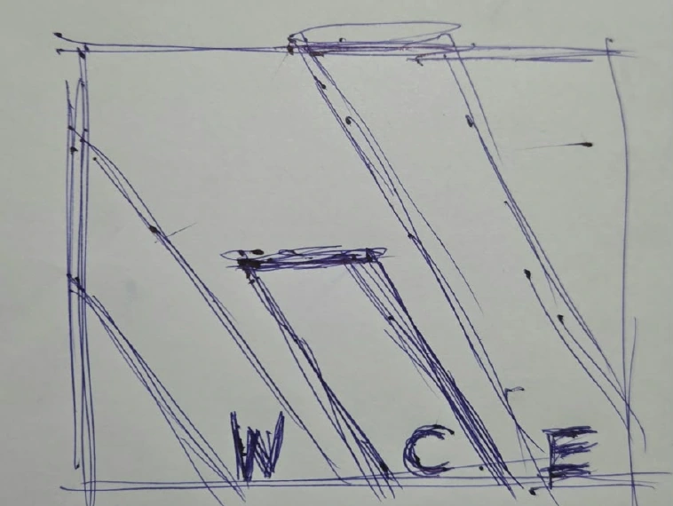
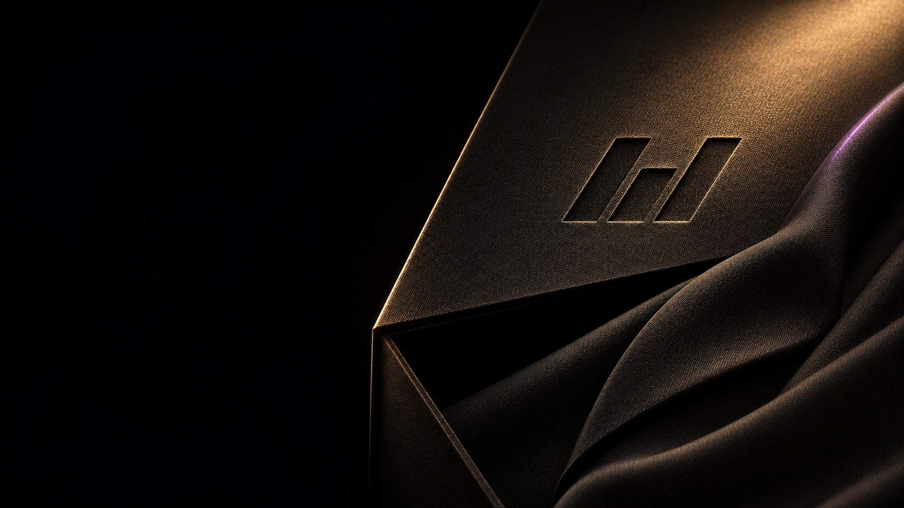
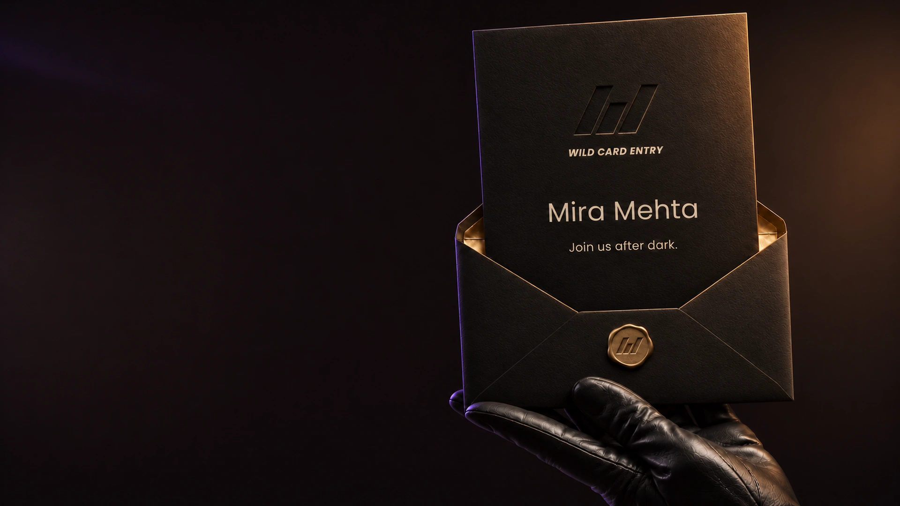
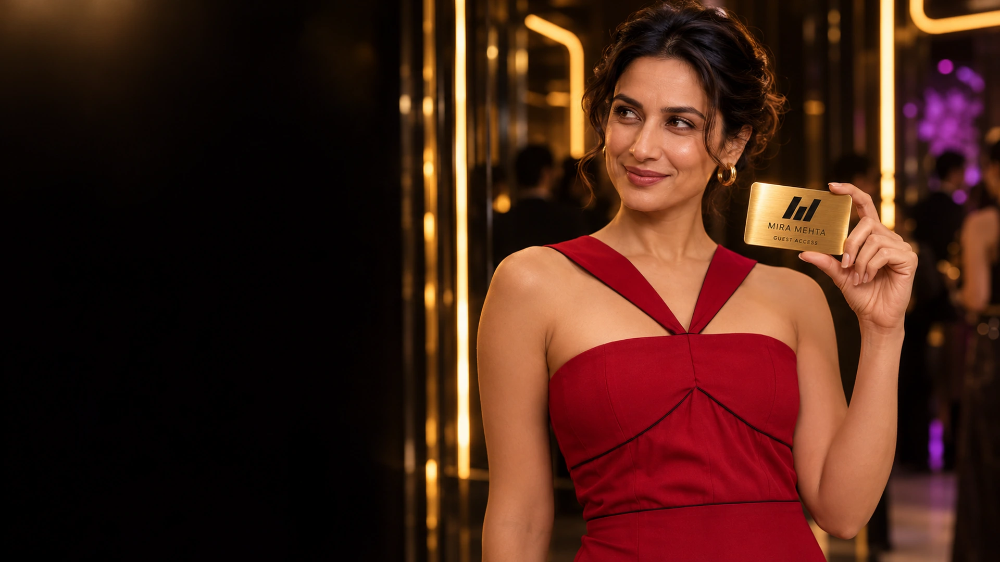
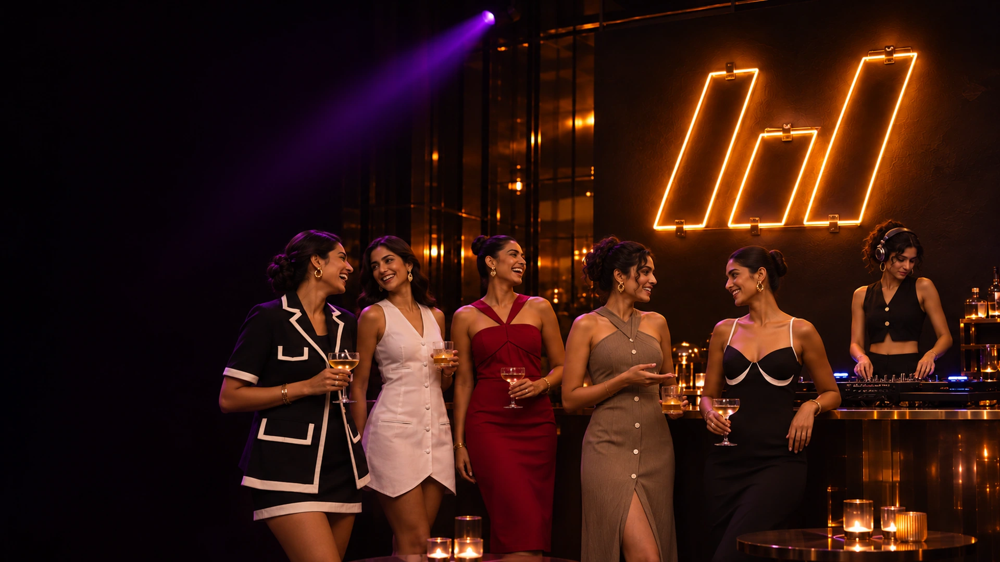
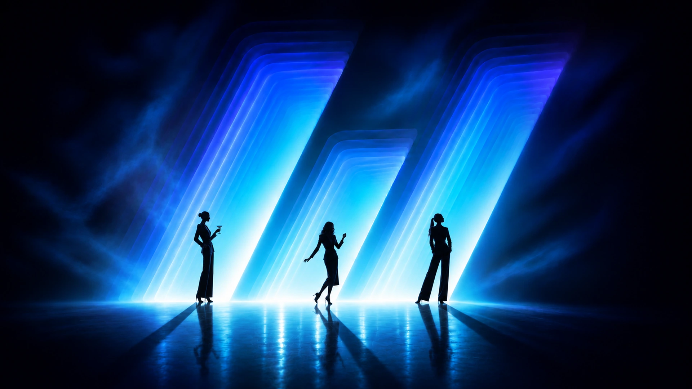
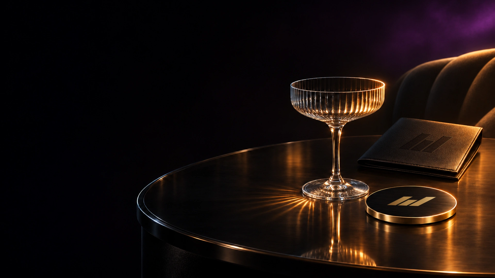

Wild Card Entry by Kallisto Miorah
The opening
A precise forward cut. Three bars on one baseline. A shorter center that opens the rhythm.
65.09° shared lean · center bar 64% of outer height
From W, C and E
The original hand studies reduce the initials to three forms. The full signature names the host. Once the invitation has done that work, the three bars can stand on their own.

Room to breathe
Reserve one bar’s width on every side. Use the endorsed signature when both the event and its host need to be named.
Minimum widths · symbol 24 px / 8 mm · signature 240 px / 44 mm

The cut
Power dressing, after dark.

A personal
invitation

Expected
by name
Your host is waiting for you.

Lit from
within
A gold signature above
the dance floor.
Light

The room

At the table
The mark becomes a detail worth noticing.